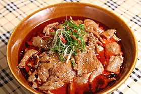
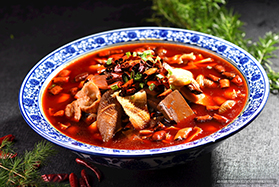
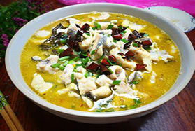

中国八大菜系之川菜

-

麻婆豆腐
麻婆豆腐是四川传统名菜，始于1862年成都陈麻婆创制，以嫩豆腐、牛肉末（或猪肉）为主料，配以豆瓣酱、花椒等调料，突出麻辣鲜香、烫嫩酥活的独特风味 ，现为国际知名川菜代表
-
川菜回锅肉
川菜回锅肉是四川传统经典名菜，被誉为“川菜之首” ，以“回锅”技法（先煮后炒）为核心，呈现色泽红亮、肥而不腻、麻辣鲜香的独特风味

-

水煮牛肉
水煮牛肉是四川自贡传统名菜，以麻辣鲜香、滑嫩烫口著称，牛肉片在辣汤中烫熟，配以郫县豆瓣、花椒提味，融合火锅风味
-

毛血旺
毛血旺是川菜经典名菜，起源于重庆磁器口 ，以鸭血、毛肚为主料，配以黄豆芽、鳝鱼等，现烫现吃，麻辣鲜香，汤汁红亮，属重庆江湖菜鼻祖
-
宫保鸡丁
宫保鸡丁是川菜经典名菜，融合鲁菜、贵州菜特色 ，由清朝四川总督丁宝桢改良推广，以鸡丁、花生米、辣椒为主料，突出麻辣酸甜的"荔枝味" ，2018年入选中国菜四川及贵州十大经典名菜

-

川菜辣子鸡
四川传统名菜，以整鸡或鸡腿为主料，配干辣椒、花椒高温爆炒，突出麻辣酥香 ，外焦里嫩、色泽红亮，兼具火锅般浓郁香气
-

酸菜鱼
重庆江湖菜鼻祖，酸菜与鲜鱼共煮，汤酸香鲜美 ，微辣不腻，鱼片嫩滑，泡菜提味解腻 ，2018年入选四川十大经典名菜。
-

夫妻肺片
成都名菜，郭朝华夫妇创制，牛杂卤制切片，淋红油花椒，麻辣浓香 ，2018年列四川十大经典名菜，曾登美国年度开胃菜榜首